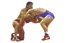
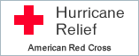

This page not designed for any particular web browser; use with any browser you want.
Non conu pour un fureteur particulier. Utilisez ce que vous
voulez.


Click here to restore text
colors and the background.
some more humor...
SNL's
Ambiguously Gay Duo #9 -- AmbiguoBoys (QuickTime movie)
AGD: the
complete series 1996-2000.
Booger Beat (Musical Cat)
(DIVX movie)
Various 2003-2005 movies and pictures, including Fun in the Kitchen
![[New!]](newspin.gif)
Cat
Fight
(MPEG movie)
Mr. & Mrs. Carrot
Last humor addition: May 21, 2005
Check out the Palaestra, a new chat and roster site
for wrestlers.
Computer
infected by Klez or another e-mail virus? Click here for information
and utilities to keep your system virus-free.
- Pictures of me:
Wrestling Organizations and Events
- Metro Wrestling
(MGWA) website -- New York City. Metro holds wrestling practice twice
weekly in New York (Wednesday and Sunday) at the Center, and also hosts
beginners’ nights, tournaments and other special events.
- Twin Towers Wrestling Club
meets Tuesday, Thursday and some Sundays at the Hamilton Fish Recreation Center
on New York's Lower East Side. Or e-mail Ed
for more information.
- The
Boston Union Wrestling Club meets in the Roxbury area of Boston;
check their website for details. They also have a
Yahoo group.
- East Coast Wrestling Club,
Rhode Island USA (with links to many other sites, vendors and events).
- Other Wrestling Clubs around the world
Hillside Wrestling Weekend -- Information and Pictures for 1996-2009
- Hillside Wrestling
Weekend XVI, July 29-August 2, 2009:
general and registration information.
- Hillside
2009 narrative with pictures, including links to 14 years of prior
Wrestling Weekends (1996-2009).
Other Events
- The Okie Rumble XII was held September 18-20, 2008 at the
Four Points Sheraton, which is at the Oklahoma City Airport. Okie
Rumble XI was held September 14-16, 2007, a month earlier and the
first time at the airport hotel. The staff there was very happy to host
us and is looking forward to the 2009 Rumble as well. Wrestling is in
several spacious conference rooms so no concerns about hitting a wall.
You can now register online for the 2009 Okie Rumble beginning in the
Spring of 2009 at the Okie Rumble Registration Page via the web and PayPal.
-
Nine Years of Pictures from the Okie Rumbles,
2000-2008.
-
The fourth annual
Suncoast Wrestling Weekend,
hosted by the Tampa Eagles, took place
March 10-12, 2006 at the Suncoast Resort in St. Petersburg, Florida.
This resort and event are unfortunately no longer around.
Various other informative and cool wrestling links
- The Intermat site is loaded with information on
collegiate and freestyle wrestling events and advocacy including
proportionality and Title IX.
- Vintage Wrestling Pictures and More.
- Ringworm Treatment.
- Globalfight
(Vangar) links.
- Yahoo group for real wrestling -- with database, pics,
profiles.
-
Reversal: a movie that is a father/son love story about wrestling,
growing up, and letting go.
- Boston, Greece and more pictures on Personal Home
Page.
Vendors of wrestling supplies
- Golden Gate's store -- calendars, workout gear and the
latest regulation short-legged singlets.
- Grecco Gear - Vintage Cut
Wrestling Singlets, Fight Shorts, Accessories, Gallery
- Rodco Sports
supplies many teams and individuals with wrestling gear, uniforms and
supplies. Rob from Rodco was at Hillside Wrestling Weekend VI selling a
wide selection of equipment. You can also send e-mail to Rodco via their
website. Items for sale include singlets (spandex, nylon, low-cut,
high-cut, regular and jam), shoes, headgear, tights, knee pads, jockstraps
and briefs.
- Matman Wrestling
Company -- “Quality Wrestling Supplier since 1969” and
supplier to colleges, high schools, teams and individuals.
- Marchant’s in Toronto, sells mats, gear, etc.
including international cut reversible singlets (Brute, stock #0111).
- ECWC’s comprehensive webpage listing vendors of all
wrestling supplies and gear.
This RingSurf
wrestlingM4M Net
Ring
owned by Nick's wrestling and
Hillside pages.
[
Previous
|
Next
|
List Sites
|
JOIN RING
]
Your comments are welcome: Click here to send me
mail!
nickz@eskimo.com
This site has been viewed ![[counter GIF]](http:/cgi-bin/Count.cgi?df=nickz.dat) times
since May 3, 2001.
times
since May 3, 2001.
Page last modified: December 29, 2009.
There have been


 visits to this wrestling page since December 5, 2001 21:30:00
visits to this wrestling page since December 5, 2001 21:30:00